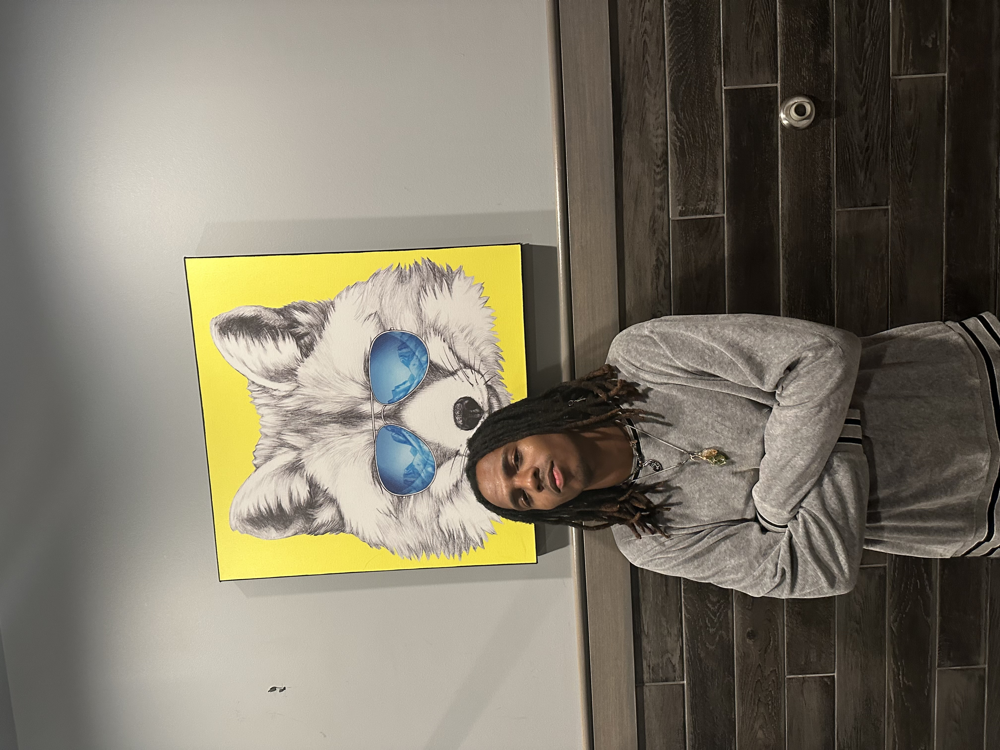

Jelani Boone || ITIS3135 Introduction

A photo of me on my 21st birthday!
- Personal Background: I've lived in Greensboro, NC almost all my life. I moved schools a lot until 7th grade where I attended Eastern Guilford and stayed until graduation. I’ve traveled to beautiful places, such as Aruba, Mexico, and Bahamas, but there’s plenty more to do in my future. I'm eager to get out and explore while learning about all the new people I meet!
- Professional Background: I have experience as an Administrative Intern with a wellness center for alcohol and drug abuse during high school. I also worked as a host for multiple restaurants in my hometown. I interned for a company called RippleMatch with an initiative to smoothen the process of getting internships for Gen Z students.
- Academic Background: I obtained my high school diploma in June 2020. I am currently pursuing a B.A. in Information Technology. Though I plan to complete my collegiate journey after my fourth year, the plan is to never stop learning.
- Background in this Subject: I always enjoyed working with robotics and any hands-on STEM project that I could get my hands on!! I see the benefits of technology and look forward to the future. Who knows, I may come up with something cool!
- Primary Computer Platform: I use a Macbook Air for personal passions such as music curation and animation. I use Windows 10 for my coding, software downloads, and professional passions.
-
Courses I'm in and Why:
- ITIS4010 - Tangible Computing - I like learning about 3D Printing
- ITIS3130 - Human-Centered Design - learning to connect humans and machines through design concepts
- ITIS3135 - Web App Design and Development - this teaches essential skills for computer science students
- ITIS3200 - Intro to Security and Privacy - I enjoy cybersecurity concepts
- Funny/Interesting Item About Me: I create works of music as a method of healing and therapy.
- I'd Also Like to Share: I'm hoping to make a podcast channel that covers my adventures as a computer scientist / musician.